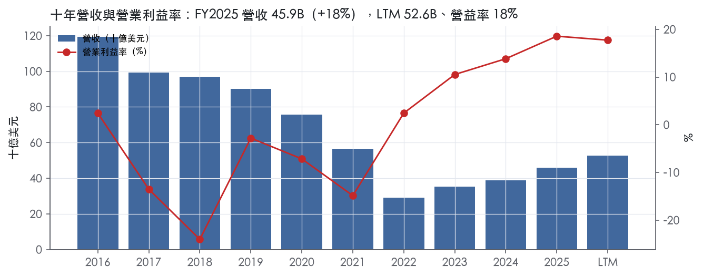
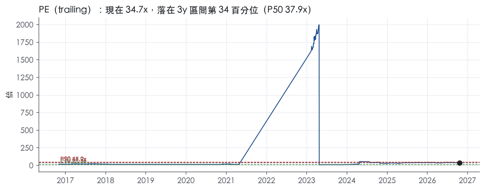
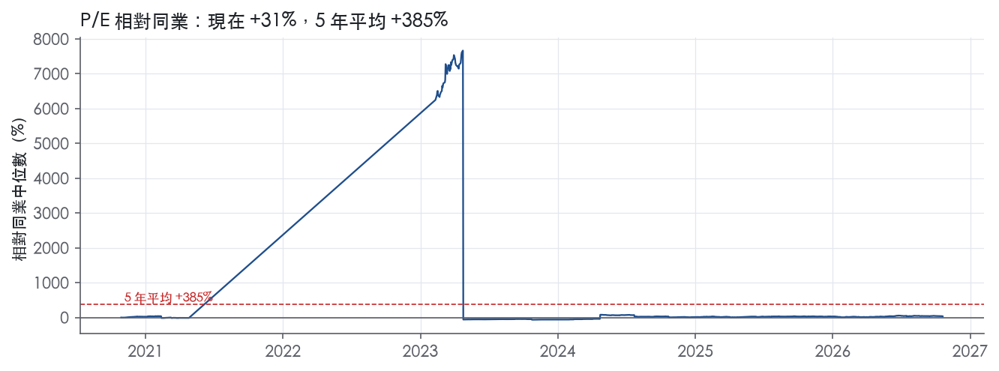
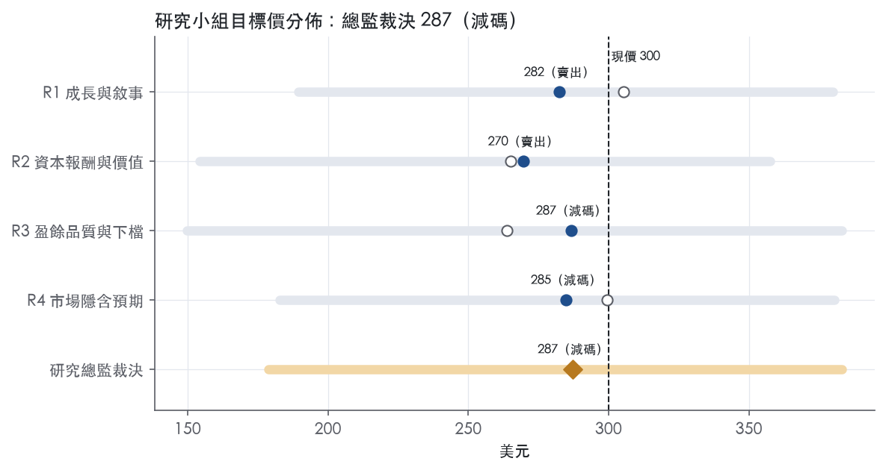
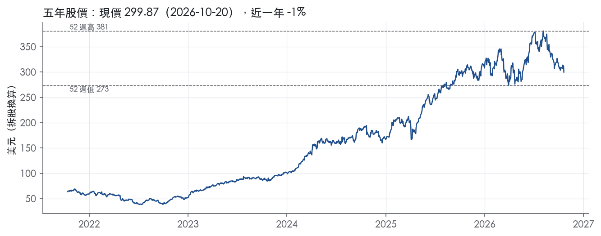

評等總表 › 工業 › GE
成長換檔已入價，相對同業偏空｜評等 減碼｜目標價 287
| 報告日 | 評等 | 目標價 | 當時股價 | 超額報酬 |
|---|---|---|---|---|
| 2026-10-20 | 減碼 | 287 | 300 | -13.7% |
| 2026-10-02 | 減碼 | 302 | 310 | -12.2% |
| 快評 | 動作 | 結論 |
|---|---|---|
| 2026-10-20 | 提前重開研究小組 | 營益率高於預測，提前重開研究小組 |
| 評等 | 減碼（邊界，鄰近賣出） |
| 12 個月目標價 | 287 美元 |
| 現價 | 299.87 美元（2026-10-20） |
| 預期報酬 | 股價 -4.2%＋股息 0.6%＝總報酬 -3.6%；同業籃門檻 10.2%，超額 -13.7% |
| 估值方法 | P/E 31.0x，套在第 5–8 季的EPS（也就是一年後的未來四季） |
| 三情境 | 熊 179／基準 297／牛 383 |
| 研究流程 | 四位研究員兩輪辯論＋研究總監裁決 |
| 資料來源 | SEC EDGAR XBRL、Tiingo、FRED（全免費） |
成長換檔已入價，相對同業偏空（研究總監裁決，四位研究員兩輪辯論後）
評等 減碼（邊界，鄰近賣出）｜12 個月目標價 287 美元（總監三情境機率加權 291 與研究員中位數 284 各半）｜現價 299.87（2026-10-20）
預期報酬：股價 -4.2%＋股息 0.6%＝總報酬 -3.6%。同業籃門檻 10.2%，超額 -13.7%，離賣出的分界不到三個百分點，屬邊界評等（落在其他級距的機率約四成）。
估值方法：P/E 31.0x，套在第 5–8 季的EPS（也就是一年後的未來四季）。三情境：熊 179（35%）／基準 297（24%）／牛 383（41%）。
什麼會讓研究總監改變看法：2027 總營收指引中點達 high-teens、FY2026Q4 LEAP 交機年增重回雙位數且 GE9X 於 2027 上半年認證，倍數上修至持平 32.9x 轉中性；FY2026Q4 與 FY2027Q1 資料包口徑營益率連兩季低於 17% 或 FY2026 FCF 低於 9.1B，熊機率上調、倍數下修。
| 過去四季（實際，FY2026Q3） | 未來四季 | 第 5–8 季 | 第 9–12 季 | |
|---|---|---|---|---|
| 營收（B） | 52.6B | 59.4B | 65.7B | 69.6B |
| 營收成長 | 19.6% | 13.0% | 10.5% | 6.0% |
| 營業利益率 | 17.7% | 17.4% | 17.6% | 18.0% |
| EPS（美元） | 8.65 | 8.48 | 9.58 | 10.49 |
| EPS 成長 | 15.5% | -1.9% | 12.9% | 9.5% |
| 每股股息（美元） | 1.77 | 1.77 | 1.77 | 1.77 |
| P/E（現價） | 34.7x | 35.3x | 31.3x | 28.6x |
| 股息殖利率（現價） | 0.6% | 0.6% | 0.6% | 0.6% |
過去四季為申報數字；預測為研究總監的假設、程式計算。倍數與殖利率都用現價計算，用來看現價對應各期獲利的高低。
| 項目 | 上次（2026-10-05） | 這次（2026-10-21） | 變動 |
|---|---|---|---|
| 評等 | 減碼 | 減碼 | ＝ |
| 機率加權目標價（美元） | 302 | 287 | -4.9% |
| 超額報酬 | -12.2% | -13.7% | -1.6 pp |
| 目標倍數 | 31x | 31x | — |
| 未來四季營收成長 | 19.0% | 13.0% | -6.0 pp |
| 未來四季營益率 | 18.1% | 17.4% | -0.7 pp |
| 未來四季 EPS（美元） | 8.93 | 8.48 | -5.0% |
| 熊／基準／牛機率 | 36／22／42 | 35／24／41 | — |
程式計算；「未來四季」各自從當次報告的資料起點算。研究總監逐點說明見第八章「與上次報告比較」。
| 情境 | 機率（歷史） | 故事 | 未來四季營收成長 | 第 5–8 季營益率 | 倍數 | 目標價 | 股價漲跌 |
|---|---|---|---|---|---|---|---|
| 熊 | 35%（35%） | 風險表第 3 條（優先供應商材料不足、LEAP 交機停在 +5%）與第 1 條（CES 服務降至個位數、GE9X 認證後低利潤認列）觸發第 2 條倍數回歸至前瞻帶 P50 20.8x／LMT、GD 一帶，疊加本行下行總經使進廠延後、備件去化 | 10.0% | 16.0% | 22.0x | 179 | -40.3% |
| 基準 | 24%（20%） | 第四季照指引降速、2027 服務 LDD、設備組合壓住營益率、公司成本不再貢獻，倍數小幅收斂 | 13.0% | 17.6% | 31.0x | 297 | -1.0% |
| 牛 | 41%（45%） | GE9X 2027 上半年認證、優先供應商放量使 LEAP 交機重回雙位數、2027 總營收指引 high-teens 且服務高於 LDD、FY2026 FCF 落在 9.1–9.4B，前瞻倍數回到 3 年 trailing P50 37.9x 一帶 | 17.0% | 19.0% | 35.0x | 383 | 27.8% |
目標價由程式依研究總監的驅動與倍數計算；機率由研究總監給定。括號內是歷史頻率：把這檔股票過去十年 12 個月報酬的波動形狀，置中在基準情境，結果落在各情境附近的比例。
四位研究員用不同方法各自估值，回應研究總監的質疑後交出第二輪，最後由總監逐點裁決。各研究員的主張見第七章，裁決理由見第八章，完整論證見《研究底稿》。
| 立場（一輪→二輪） | 加權目標價（一輪→二輪） | 評等（一輪→二輪） | 第二輪倍數 | 熊～牛目標價 | |
|---|---|---|---|---|---|
| R1 成長與敘事 | 中性→看空 | 305→282 | 減碼→賣出 | 33.0x | 189～380 |
| R2 資本報酬與價值 | 看空→看空 | 265→270 | 賣出→賣出 | 33.0x | 154～358 |
| R3 盈餘品質與下檔 | 看空→看空 | 264→287 | 賣出→減碼 | 30.0x | 150～383 |
| R4 市場隱含預期 | 看空→看空 | 299→285 | 減碼→減碼 | 27.0x | 183～380 |
| 研究總監裁決 | 看空 | 287 | 減碼 | 31.0x | 179～383 |
目標價由程式依各自的驅動與倍數計算；評等＝機率加權總報酬 − 同業籃門檻。
GE（GE Aerospace）是一家以商用與軍用噴射引擎為核心的航太製造與售後服務公司，客戶是全球航空公司、租賃公司與各國國防部門。公司營運以兩大報告分部呈現：Commercial Engines & Services（CES）與 Defense & Propulsion Technologies（DPT）¹。LTM 營收 52.58B 美元，市值 309.87B 美元，是一家規模與獲利能力都在快速爬升的公司。
CES 做商用引擎與售後服務，是公司最大、成長最快的分部。第三季 CES 調整後營收 10,342M 美元，年增 21%，調整後營業利潤 2,887M 美元、年增 21%，營業利益率 27.9%¹；累計前九個月 CES 營收 28,992M 美元、年增 27%，營業利潤 7,899M 美元、年增 22%，營業利益率 27.2%¹。CES 成長動能來自服務營收（內部修理廠產值、備件）與設備交機量，第三季服務成長 17%、內部修理廠產值成長 12%（LEAP 修理廠產值成長逾 40%），備件營收成長逾 20%；設備營收成長 38%，由引擎交機量成長 8%（LEAP 成長 5%）及 GEnx 增長驅動¹。GE9X 已開始交機，但認列要等 midseal 認證後¹。
DPT 做國防推進系統、Avio Aero、Unison 等業務，規模較小但穩定成長。第三季 DPT 調整後營收 3,469M 美元、年增 7%，營業利潤 475M 美元、年增 8%，營業利益率 13.7%¹；累計前九個月營收 10,126M 美元、年增 13%，營業利潤 1,329M 美元、年增 14%¹。DPT 內部再分 Defense & Systems（服務與設備雙成長，交機量成長 4%）與 Propulsion & Additive Technologies（由 Avio Aero 與 Unison 驅動成長 10%）¹。
兩分部營收比重：CES 約佔前九個月調整後總營收 28,992M／37,533M（≈77%），DPT 約佔 10,126M／37,533M（≈27%，含抵銷項）。公司 10-K Item 1 本身篇幅極短，業務細節主要揭露於 Item 2 Properties 與 MD&A，10-K 未提供更細緻的產品線拆分。
GE 的客戶結構以全球航空公司（商用引擎租賃與維修）與各國國防部門（軍用引擎與系統）為主。新聞稿顯示具體客戶案例：IndiGo 簽下史上最大 LEAP-1A 訂單，逾 1,000 台引擎；土耳其航空簽約逾 300 台 LEAP-1B 引擎，並涵蓋其整個逾 600 台 LEAP-1B 機隊的長期服務協議¹。國防端，公司與美國海軍簽署一份最高 2.9B 美元的合約，為 F/A-18 與 EA-18G 機隊的 F414 引擎提供持續支援¹。通路上，公司透過直接銷售原廠設備（OEM）搭配長期服務協議（LTSA）綁定客戶全生命週期維修需求。10-K Item 1 未就地區營收占比做進一步揭露。
過去四季營收與利潤率呈現穩定擴張趨勢。FY2025Q4 營收 12.72B 美元、年增 17.6%，營益率 17.7%（dv 系列）。FY2026Q1 營收 12.39B 美元、年增 24.7%，營益率回升至 17.9%。FY2026Q2 總營收（GAAP）13.3B 美元、增 21%，調整後營收 12.6B 美元、增 24%，調整後營業利潤 2.7B 美元、增 18%，調整後 EPS 2.02 美元、增 22%，自由現金流 3.0B 美元、增 43%²；公司將 2026 財年指引全面上修，調整後營收成長由 LDD（low double digits）上修至 high-teens，調整後營業利潤區間上修至 10.55–10.75B 美元，調整後 EPS 上修至 7.65–7.85 美元²。FY2026Q3（第三季）總訂單 19.0B 美元、增 49%，總營收（GAAP）14.1B 美元、增 16%，調整後營收 13.3B 美元、增 18%，調整後營業利潤 3.0B 美元、增 30%，調整後 EPS 2.25 美元、增 36%，自由現金流 2.0B 美元、減 14%¹；公司再次全面上修 2026 財年指引，調整後營收成長上修至約 19-20%，調整後營業利潤上修至 10.9–11.0B 美元，調整後 EPS 上修至 8.00–8.10 美元，自由現金流上修至 9.1–9.4B 美元¹。
公司將成長歸因於商用售後服務需求強勁與 FLIGHT DECK 營運改善方法論：CEO Culp 表示「solid demand drove orders up 49%, with strength in commercial services up 23%, total revenue up 18% and EPS up 36%」，並預期 2027 年商用服務將以 low-double-digits 成長，支撐來自逾 170B 美元的商用服務在手訂單¹。公司強調供應商合作與產能擴充：「leveraging FLIGHT DECK fundamentals, year-to-date commercial services revenue and total engine deliveries were both up over 20%」，並提及簽署收購 Consolidated Precision Products（CPP）以擴充鑄件產能，以及每年逾 3B 美元的研發投入「to advance current and future technologies」¹。技術面上，公司提到完成與 NASA、BETA Technologies、Boeing 合作的全球首次逾 30,000 英尺高海拔混合動力飛行測試，並推進 XA102 變循環引擎、GEK800（F143）引擎成為 JASSM 的第二供應源方案¹。
GE 的成長引擎本質上是售後服務（高利潤、長週期、在手訂單visibility 極高）疊加商用引擎交機量回升的雙重槓桿。CES 單季營益率已站穩 27-28%，遠高於 DPT 的 13-14%，顯示公司對 CES 服務佔比提升的依賴度持續加大。CPP 收購與持續上修的指引顯示管理層對供應鏈瓶頸緩解與需求能見度的信心正在增強，是觀察後續股價動能的關鍵訊號。

GE Aerospace 評為窄護城河、趨勢變寬：我們有把握 ROIC 在未來 5 年以上高於資本成本，但還沒有足夠證據支持 10 年以上。
支撐評級的是兩件事：龐大的商用引擎裝機基礎，以及綁定裝機基礎的長期服務協議。不給「寬」有兩個原因。第一，以純航太公司型態算出的 ROIC 只有兩年站上資本成本。第二，本次拿到的 10-K Item 1 原文沒有任何競爭段落可以佐證產業結構。
GE 的優勢主要來自轉換成本，其次是無形資產；成本優勢、網路效應、效率規模三類都沒有可引用的證據，所以不列。
轉換成本（主要來源）
引擎一旦裝上機隊，後續維修、備件與大修幾乎鎖定原廠，長期服務協議把這種鎖定寫進合約。業務概況章轉引的具體證據如下：
這些證據顯示兩點：
無形資產（次要來源）
公司每年投入逾 3B 美元研發「to advance current and future technologies」¹。公司也在推進 XA102 變循環引擎，並推動 GEK800（F143）成為 JASSM 的第二供應源方案¹。持續的技術投入加上適航認證門檻，構成新進者難以複製的技術與認證資產。
不過，我們手上沒有專利數量或認證制度的原文描述，這一類的證據強度低於轉換成本。
資料限制
以上 8-K 內容均轉引自業務概況章，本章未直接讀到該 8-K 原文。估值研究員引用前應回原檔核對。
量化底稿的十年統計與我們的主張直接衝突：
這完全不是寬護城河該有的穩定型態。
我們仍維持「窄」而非下修為「無」，理由是這組十年數字量的不是同一家公司。
只看轉型為純航太公司後的區段，方向一致向上：
| 期 | ROIC | 營益率 |
|---|---|---|
| FY2023 | 9.0% | — |
| FY2024 | 16.2% | 13.8% |
| FY2025 | 28.3% | 18.6% |
分部層級也支持這個方向：CES 第三季營業利益率 27.9%，累計前九個月 27.2%¹。服務端的高利潤率與轉換成本主張一致。
但乾淨的樣本只有 2 到 3 年，而且正好落在航空售後需求強勁、供給吃緊的週期高點。這個長度不足以證明 10 年以上的持續性，這就是我們停在「窄」的原因。
我們看到四個侵蝕風險，依重要性排列如下。
1. 獲利率已有轉折跡象
若利潤率下滑持續兩季以上，代表目前的 ROIC 有週期成分，而不全是結構性優勢。
2. 供應鏈瓶頸
公司簽署收購 Consolidated Precision Products 以擴充鑄件產能¹。這說明上游鑄鍛件是限制交機與維修的瓶頸。瓶頸若久不解決，客戶等待時間拉長，會推動航空公司尋找第三方維修與替代零件，直接削弱轉換成本。
3. 新機型的認證風險
GE9X 已開始交機，但認列要等 midseal 認證後¹。新機型若在耐久度或認證上出現延誤，影響的是下一代裝機基礎，也就是 10 年後護城河的寬度。
4. 資本成本上升
10 年期公債殖利率 5.15%。資本成本門檻抬高後，ROIC 回落時，高於資本成本的空間會比過去更窄。
目標倍數相對航太同業應給予小幅溢價，理由是商用服務在手訂單與長期服務協議提供的 5 年以上能見度，屬於結構性而非週期性的優勢。
但溢價不應建立在 FY2025 ROIC 28.3%可以延續 10 年以上的假設上。現行 P/E 34.7x 已位於自身歷史偏高區間：EV/Sales 6.1x 處於 5 年分位 71.1%。估值模型的超額報酬期建議設定在 5 到 10 年之間，之後向資本成本收斂。
| 指標 | 最新 | 十年平均 | 標準差 | 最低 | 最高 |
|---|---|---|---|---|---|
| ROIC | 28.3% | 1.0% | 13.7% | -18.9% | 28.3% |
| 毛利率 | 20.3% | 30.8% | 9.7% | 20.3% | 47.7% |
| 營業利益率 | 18.6% | -1.5% | 13.0% | -24.0% | 18.6% |
| FCF 利潤率 | 15.8% | 6.0% | 6.9% | -5.1% | 15.8% |
| ROE | 45.8% | 2.8% | 28.8% | -51.4% | 45.8% |
程式計算。資本成本代理值（10 年債＋5%）：10.2%；ROIC 平均減資本成本：-9.1%；ROIC 有資料的 9 年中，高於資本成本 2 年。
GE Aerospace 目前的盈餘有現金支撐，LTM 營業現金流／淨利為 1.04x（計分表）、應計比率 -0.3%（計分表），顯示近期盈餘不是靠應計堆出來的。但自由現金流／淨利 LTM 僅 0.88x、近三年均值 0.62x，均落在黃燈區，代表資本支出與營運資金正在吃掉一部分現金轉換。十年期間的七次淨利率跳動（FY2016–FY2023）是公司分割保險、金融資產出售與多年重組所致的結構性變化，不是當期盈餘品質的紅旗。整體評級給「中」，是因為近三年現金轉換弱於十年均值、且本次 10-K Item 7 原文摘錄未提供可供逐條核對的敘述文字，無法對歷史波動做逐項原文佐證。
LTM 營業現金流／淨利 1.04x 達到綠燈門檻（計分表），代表過去四季現金流入足以覆蓋帳列淨利。但近三年均值僅 0.75x，低於十年均值 1.73x，顯示 2023–2025 年隨著營收重新成長，營運資金佔用（應收、存貨）在擴大，現金轉換速度不如業務重整前。FCF／淨利 LTM 0.88x、近三年 0.62x 均未達 0.90x 綠燈門檻（計分表），資本支出雖不高（FY2025 資本支出／營收 2.8%，資料包年度表），但仍使自由現金流落後淨利成長速度。存貨成長減營收成長 FY2025 為 +3.1pp，仍在 5pp 綠燈範圍內（計分表），尚未出現存貨堆積吃掉盈餘的跡象。季度數據顯示 FY2026Q3 CFO 2.15B、FCF 1.82B（資料包季表），低於 FY2026Q2 的 3.19B／2.86B（資料包季表），單季現金轉換有波動，但季度間本屬正常。8-K 揭露 Q3 2026 CFOA 為 2,203M，年減 14%¹，FCF 為 2,042M，年減 14%¹，與 GAAP 獲利 2,805M 年增 12%¹出現背離，現金面明顯落後獲利面成長。
公司將保險業務營收與費用全數排除出調整後數字：9 個月累計少計保險營收 2,326M¹、少計保險費用 2,235M¹，這是業務組合認定問題、不是現金或盈餘品質瑕疵。利息及其他財務費用 675M 被排除在調整後成本外¹，這筆是真實的現金利息支出，我認為不該被排除，估值時應視為真實成本。非營業福利利益（收入）531M 被排除¹，這屬於退休金精算的非現金項目，排除合理。重組及其他費用 9 個月累計 74M¹規模不大，屬於可接受的一次性項目。分割成本（separation costs）93M¹是 GE 分拆 HealthCare／Vernova 後續的過渡性費用，屬於真正會逐年遞減的一次性支出。Other income 項下剔除美國稅務權益 187M、剔除持有及出售股權投資損益 127M¹，這類投資損益波動大，排除方向合理，但代表公司獲利結構中仍有相當部分來自金融資產處分而非核心飛機引擎業務。整體而言，Q3 2026 調整後 EPS 2.25 較 GAAP 2.32 低¹，調整後反而比 GAAP 數字保守，顯示公司並未透過非 GAAP 大幅美化單季每股盈餘。
槓桿維持低檔，淨負債／EBITDA LTM 1.08x、近三年均值 0.99x，均在 1.50x 綠燈門檻內（計分表），遠低於十年均值的 -12.5x 異常值（當時淨現金部位，資料包年度表顯示 FY2022 淨負債僅 8.25B、FY2016 高達 87.67B，波動反映多年去槓桿）。利息保障倍數欄位無資料（計分表顯示「—」），無法在本文中核實付息能力燈號，但從淨負債／EBITDA 低檔與 EBITDA 規模（LTM 10.22B，快照）推斷利息負擔應可控。資本配置方面，股利加回購／淨利 LTM 93.4%、近三年 62.9%（計分表），十年均值 133.3%（計分表）反映過去曾在淨利微薄甚至虧損年度仍維持股東回饋、靠舉債支應，但近三年比率已降至合理區間。稀釋股數年變動 LTM -0.6%、近三年 -1.0%（計分表），顯示公司持續淨減少股數，對每股盈餘是正貢獻、非稀釋風險。現金部位於 FY2026Q3 為 8.76B，較 FY2025Q4 的 12.39B 下滑（資料包季表），同期總債務維持在 19.81B（資料包季表）附近區間波動，淨負債小幅上升但仍在安全帶內。
程式標出的七條紅旗全部指向 FY2016 至 FY2023 間淨利率逐年大幅跳動（-15pp、-14pp、+18pp、+13pp、-19pp、+12pp、+26pp）。這段期間對應 GE 的多年業務重整，包含金融臂（GE Capital）收縮、保險準備金調整、以及後續分拆 GE HealthCare 與 GE Vernova 等結構性變化，是已知的公司轉型歷程、非當期盈餘操縱跡象。但必須說明：本次提供的 10-K Item 7 原文節錄僅包含目錄索引與簽署頁，並未附上 MD&A 實質分析文字，因此無法逐年引用原文具體說明每次跳動的一次性項目金額。在缺乏原文佐證下，這七條紅旗只能視為「結構性、可用公開已知轉型歷程解釋，但未經本次原文驗證」的灰色區域，不能直接判定為假警報。計分表中唯一的黃燈——FCF／淨利 LTM 0.88x 與近三年 0.62x——反映資本支出與營運資金擴張的正常拖累，對照存貨成長减營收成長仍落在綠燈區（+3.1pp，計分表），我認為這是業務成長期的正常現象、非盈餘品質瑕疵。其餘所有燈號（CFO／淨利、應計比率、SBC／營收、淨負債／EBITDA、稀釋股數、股東回饋）均為綠燈，沒有需要額外解釋的項目（計分表）。
估值應以 GAAP 淨利與調整後 EPS 並陳，但因為利息費用與保險損益排除項規模不小，建議對非 GAAP 調整後 EPS（Q3 2026 為 2.25¹）打七至八折參考、不要直接套用全額。近三年 FCF／淨利僅 0.62x（計分表），顯示用 GAAP 淨利計算的本益比（trailing P/E 34.7x，資料包快照）可能低估了真實現金殖利能力的壓力，建議估值模型用 FCF 而非淨利作主要錨點。槓桿目前不構成限制倍數的理由，淨負債／EBITDA 1.08x（計分表）遠低於警戒線，不需要因資產負債表而對估值倍數打折。
| 項目 | LTM | 近三年 | 十年 | 燈號 | 規則 |
|---|---|---|---|---|---|
| 營業現金流／淨利 | 1.04x | 0.75x | 1.73x | 綠 | ≥1.00x 綠、<0.80x 紅 |
| 自由現金流／淨利 | 0.88x | 0.62x | 1.33x | 黃 | ≥0.90x 綠、<0.60x 紅 |
| 應計比率（(淨利−CFO)／平均總資產） | -0.3% | 1.2% | -2.2% | 綠 | ≤0.0% 綠、>5.0% 紅 |
| SBC／營收 | — | 0.7% | 0.5% | 綠 | ≤3.0% 綠、>8.0% 紅 |
| 淨負債／EBITDA | 1.08x | 0.99x | -12.5x | 綠 | ≤1.50x 綠、>3.00x 紅 |
| 利息保障倍數（營業利益／利息） | — | — | — | — | ≥8.00x 綠、<3.00x 紅 |
| 稀釋股數年變動 | -0.6% | -1.0% | -0.7% | 綠 | ≤0.0% 綠、>3.0% 紅 |
| （股利＋回購）／淨利 | 93.4% | 62.9% | 133.3% | 綠 | ≥50.0% 綠、<0.0% 紅 |
| 存貨成長 − 營收成長（FY2025） | +3.1pp | — | — | 綠 | ≤5pp 綠、>15pp 紅 |
程式計算；燈號以 LTM（無則近三年平均）判定。
| 風險 | 觸發指標（看什麼數字、在哪裡看） | 對 EPS 的影響方向與粗略幅度 | 未來 12 個月發生機率 | 出處 |
|---|---|---|---|---|
| 1. CES 服務成長放緩／GE9X 延後認列拖累毛利結構 | 每季 CES 服務收入年增率與營益率（目前 27.9%，年增 21%）；GE9X midseal 認證公告日 | 負向，大（CES 佔前九個月調整後營收約 77%） | 中 | 8-K 財報新聞稿（2026-10-20） |
| 2. 估值倍數回歸：P/E、EV/Sales 已在歷史高檔 | P/E（現 34.7x，全期起點 22.4x）、EV/Sales（現 6.1x，5y P90 7.5x，現為 71.1% 分位） | 負向，大（倍數壓縮不動盈餘但直接打股價） | 中 | 【判，數字抄自資料包 band 表】 |
| 3. 優先供應商材料交付不足，限制交機與修理廠產值放量 | 「priority suppliers」材料投入年增率（新聞稿用語）、LEAP 交機年增率（現 26%）、內部修理廠產值年增率 | 負向，中（若交機不及訂單，營收認列遞延） | 中 | 8-K 財報新聞稿（2026-10-20） |
| 4. 大型單一客戶／單一合約集中度：IndiGo、土耳其航空等超大型訂單若取消或遞延 | 單一客戶訂單公告金額與交機排程變動；Backlog（現 170B 美元）季度變化 | 負向，中（巨額訂單一旦生變，影響未來數年營收能見度） | 低 | 8-K 財報新聞稿（2026-10-20） |
| 5. CPP 併購整合風險：產能擴充承諾能否如期轉化為交機量與毛利 | CPP 交易完成日、交割後首次合併財報的毛利率與資本支出/營收比 | 負向，中（整合不順會拖累 EBITDA margin 與自由現金流） | 低 | 8-K 財報新聞稿（2026-10-20） |
CES 服務成長放緩是最該盯的風險，因為它是公司獲利的主引擎。第三季 CES 調整後營收 10,342M 美元、年增 21%，營業利潤率 27.9%，但年減 10 個基點，公司自己說是「mix and inflation」造成¹。更關鍵的是 GE9X 已開始交機，但認列要等 midseal 認證後才會進帳¹，這代表目前帳上還沒反映 GE9X 帶來的營收，一旦認證時程又延後，市場原本預期的 2027 年服務「low-double-digits」成長（公司自己給的指引¹）就可能要下修，而 CES 占了前九個月調整後總營收約 77%，牽一髮動全身。
估值倍數位階已經不便宜，這不是公司會寫在 10-K 裡的風險，但是投資人最該量化監測的一條。目前 P/E 34.7x，遠高於這檔股票全期起點的 22.4x（2016-11-02），EV/Sales 6.1x 也站在近五年 71.1% 分位，接近 P90 的 7.5x。這代表股價已經price in 相當高的成長延續性，任何一次季度訂單或指引不如預期，倍數有較大壓縮空間，而這與獲利本身無關，純粹是市場情緒與基期效應。
供應鏈瓶頸是公司自己在新聞稿裡持續強調、但尚未完全解決的風險。公司表示「增加優先供應商材料投入雙位數年增」支撐了 CES 服務營收與交機量成長，LEAP 交機年增 26%¹，顯示供應鏈仍是產能天花板，而非需求天花板。這和疫情後航太業普遍的鍛件、鑄件供應吃緊問題一致，一旦優先供應商交付速度不如預期，交機與修理廠產值的「record」紀錄就很難延續，直接衝擊 CES 設備與服務雙線營收。
客戶訂單集中在少數超大型合約，是業務概況章已經點出、但 10-K 本身篇幅極短、未深入揭露的風險。IndiGo 史上最大的逾 1,000 台 LEAP-1A 訂單、土耳其航空逾 300 台 LEAP-1B 引擎及涵蓋其整個逾 600 台機隊的長期服務協議¹，這類巨額單一客戶合約一旦因航空公司自身財務狀況或機隊規劃生變而遞延，對公司逾 170B 美元的服務在手訂單（backlog）會造成結構性影響，但發生機率相對低，因為長期服務協議通常有合約約束力。
CPP 併購是公司主動承諾的擴產計畫，執行風險需要觀察。公司簽署收購 Consolidated Precision Products 以擴充鑄件產能，目標是「meet demand across commercial engines, aftermarket and defense」¹，這代表公司承認現有產能不足以支撐訂單成長。整合風險在於交割後能否順利放量，若否，會拖累毛利率與自由現金流轉換率（目前全年指引 FCF conversion >100%，9.1–9.4B 美元¹），但這類併購整合風險通常在 12 個月內尚不會完全顯現，機率判定為低。
本次資料包提供的 10-K Item 1A 僅為目錄頁碼（24-31 頁），未包含風險因子實際內文，因此無法逐條引用公司原文風險揭露，以下兩點完全基於業務概況與財報新聞稿的交叉判斷。
第一，公司的「Corporate Cost & Eliminations」在第三季仍是負 373M 美元的拖累項，且前九個月年增幅度（-9%，即成本擴大）高於營收成長，若集團層級成本控管鬆動，會侵蝕 CES 與 DPT 兩分部創造出的營業利潤成長動能，這是公司在新聞稿裡只用一行帶過、但值得單獨監測的項目【判，數字抄自 8-K 2026-10-20】。
第二，公司連續兩季全面上修全年指引（adjusted EPS 從 6.37 美元指引上修到 8.00–8.10 美元區間¹），顯示管理層對超預期的容忍度很高、市場對「再度上修」已有高度預期，若 Q4 僅是「符合」而非「再超越」原已上修的指引，股價反應可能是負面的，這是典型的「預期已經跑在數字前面」的風險，公司不會寫在 10-K 裡，但是最貼近未來 12 個月股價波動的觸發點。
現價 299.87 對應 trailing（過去四季）P/E 34.7x、EV/EBITDA 31.4x、EV/EBITA 33.1x、EV/Sales 6.1x、FCF 殖利率 2.6%。主要估值倍數 P/E 現在 34.7x，落在3 年區間第 34 百分位（P10／P50／P90 = 13.3x／37.9x／45.2x）。

把程式的機械基準預測放到現價下，市場付的前瞻倍數是：P/E（未來四季） 32.9x、P/E（第 5–8 季） 29.1x。反推 DCF 顯示市價隱含未來五年營收年成長 19.1%（WACC 9.0%、終值成長 3.0%、FCF 利潤率 14.5%，SBC 不加回）。
| 倍數 | 現在 | 3 年 P10 | 3 年 P50 | 3 年 P90 | 現在分位 | 全期 P50 |
|---|---|---|---|---|---|---|
| P/E | 34.7x | 13.3x | 37.9x | 45.2x | 34.0% | 22.4x |
| EV/EBITDA | 31.6x | 30.6x | 37.5x | 41.5x | 12.0% | 36.6x |
| EV/EBITA | 33.3x | 33.1x | 40.3x | 45.0x | 10.1% | 41.0x |
| EV/EBIT | 34.7x | 34.8x | 42.8x | 48.5x | 9.7% | 42.8x |
| EV/Sales | 6.1x | 3.6x | 6.0x | 7.8x | 51.7% | 1.6x |
| P/S | 5.9x | 3.5x | 5.9x | 7.6x | 50.9% | 1.0x |
| P/FCF | 38.9x | 28.2x | 41.9x | 59.3x | 42.5% | 28.3x |
trailing 倍數（股價 ÷ 過去四季）；分位以每個交易日計算。
同業籃：RTX, HON, TDG, HWM, LMT, GD（手動名單（playbooks/peers.yaml））。評等門檻 10.2%：同業「倍數不變下持有一年」的隱含報酬中位數（＝ FCF 殖利率 ×(1＋g)＋g，g 為 5 年營收年複合成長並夾在 −2%～8%），每家夾在 0～15%、P/E 低於 5 倍視為資料可疑而排除，中位數再限制在 10 年債到 10 年債＋5% 之間（同業原始中位數 10.7%）。
| 代號 | 市值 | 5 年營收 CAGR | 營益率 | ROIC | P/E | 5 年 P/E 中位數 | EV/EBITDA | P/FCF | 隱含報酬 |
|---|---|---|---|---|---|---|---|---|---|
| GE | 309.9B | -9.6% | 17.7% | 28.3% | 34.7x | — | 31.4x | 38.6x | 0.5% |
| RTX | 260.9B | 9.4% | 11.8% | 7.9% | 31.4x | 36.2x | 18.4x | 27.5x | 11.9% |
| HON | 67.6B | 2.8% | 20.7% | 17.7% | 8.3x | 12.3x | 10.1x | 16.9x | 8.9% |
| TDG | 65.6B | 11.6% | 46.0% | 22.9% | 32.0x | 45.0x | 19.0x | 34.0x | 11.2% |
| HWM | 84.7B | 9.4% | 27.4% | 22.4% | 45.6x | 44.9x | 31.7x | 47.3x | 10.3% |
| LMT | 126.8B | 2.8% | 11.9% | 27.1% | 20.3x | 20.4x | — | 14.5x | 9.9% |
| GD | 93.1B | 6.7% | 10.2% | 14.6% | 21.6x | 20.7x | 15.1x | 15.0x | 13.8% |
| 同業中位數 | 8.1% | 16.3% | 20.1% | 26.5x | 28.4x | 18.4x | 22.2x | 10.2% |
全部 trailing，程式以各公司 SEC XBRL 與 Tiingo 行情計算；第一列為本檔。
P/E 相對同業中位數：現在 30.8%，過去 1 年平均 29.9%、3 年 15.3%、5 年 384.7%；EV/EBITDA 相對同業中位數：現在 69.7%，過去 1 年平均 78.1%、3 年 77.8%、5 年 86.0%。

事後實現前瞻倍數帶（P/E，2018-11-19..2025-11-17）：P10／P50／P90 = 5.6x／20.8x／32.3x。它是每個交易日的股價除以之後四季實際實現的指標；一年後，今天的第 5–8 季正是那時的未來四季，所以這條帶是 12 個月目標價的同口徑倍數。因為用的是事後實際而非當時預期，過去成長超乎預期的公司這條帶會偏低。
程式的機械基準（成長率從過去四季年增率三年收斂到 6%、利潤率持平）用 事後實現前瞻 P/E P50 估值得到 214（-28.7%），市場現行前瞻倍數（現價 ÷ 基準 未來四季指標）一年後持平，套在基準 第 5–8 季指標得到 339。這兩個數字只是參考點，不是本報告的目標價；研究員對這個定價的回應在第七章。
下表是每位研究員第一輪（各自獨立）與第二輪（回應研究總監的質疑後）的結果。目標價全由程式依各自的假設計算。
| 立場（一輪→二輪） | 加權目標價（一輪→二輪） | 評等（一輪→二輪） | 第二輪倍數 | 熊～牛目標價 | |
|---|---|---|---|---|---|
| R1 成長與敘事 | 中性→看空 | 305→282 | 減碼→賣出 | 33.0x | 189～380 |
| R2 資本報酬與價值 | 看空→看空 | 265→270 | 賣出→賣出 | 33.0x | 154～358 |
| R3 盈餘品質與下檔 | 看空→看空 | 264→287 | 賣出→減碼 | 30.0x | 150～383 |
| R4 市場隱含預期 | 看空→看空 | 299→285 | 減碼→減碼 | 27.0x | 183～380 |
| 研究總監裁決 | 看空 | 287 | 減碼 | 31.0x | 179～383 |
目標價由程式依各自的驅動與倍數計算；評等＝機率加權總報酬 − 同業籃門檻。
分歧度：第一輪 加權目標價 264～305（區間＝現價的 14%）· 倍數 27～33x · 立場 中性×1、看空×3；第二輪 加權目標價 270～287（區間＝現價的 6%）· 倍數 27～33x · 立場 看空×4（方向一致）。

| 研究員 | 第二輪主張 | 堅持的理由 |
|---|---|---|
| R1 成長與敘事 | 偏空，營收成長12.0%，給P/E 33x，套在未來12個月EPS。 | 在手訂單逾170B是真需求，第二、三年成長11%與8%不下修。 |
| R2 資本報酬與價值 | 偏空，以TDG的32.0x為錨加小幅溢價，給P/E 33x。 | FCF殖利率2.6%低於10年債5.15%，報酬全靠成長兌現。 |
| R3 盈餘品質與下檔 | 相對同業偏空，給P/E 30x，營益率由17.4%走到18.0%。 | 熊情境營益率15.0%不是重複扣分，研發與總部成本縮不下來。 |
| R4 市場隱含預期 | 偏空，給P/E 27x，市場付的32.9x已高於歷史高檔32.3x。 | RTX、TDG已低於自身5年中位數，GE會補上類股降評。 |
每位研究員的逐條回應與完整論證見《研究底稿》（GE_研究底稿_2026-10-21.docx）。
| 分歧點 | R1 | R2 | R3 | R4 | 什麼資料會分出勝負 |
|---|---|---|---|---|---|
| 1. NTM 營收成長 rev_growth_y1 | 12.0% | 13.0% | 13.5% | 14.0% | FY2026Q4 GAAP 營收年增（2027-01 底）；2027 調整後營收指引中點（2027-02） |
| 2. Q5–Q8 營收成長 rev_growth_y2 | 11.0% | 9.0% | 9.5% | 11.0% | 2027 年初設備／LEAP 交機指引；FY2026Q4–FY2027Q1 LEAP 交機年增；GE9X midseal 認證日；CPP 交割 |
| 3. 營益率路徑 op_margin_y1/y2/y3 | 17.5／17.5／18.0 | 17.0／17.5／17.5 | 17.4／17.6／18.0 | 17.7／18.0／18.5 | FY2026Q4、FY2027Q1 資料包口徑營益率；CES 分部利潤率年變動；公司成本是否如指引約 (500)M 持平 |
| 4. 目標倍數與口徑 multiple | 33x eps@ntm | 33x eps@ntm | 30x eps@q5_q8 | 27x eps@q5_q8 | 2027 指引公布後 GE trailing P/E 相對 RTX／TDG 的位置；2027 總營收指引是否 high-teens |
| 5. 情境機率與牛熊順序 | 30／37／33（熊＞牛） | 35／35／30 | 40／32／28 | 36／34／30 | 程式歷史基準率對照；FY2026Q4 財報是否出現單邊訊號 |
分歧 1：NTM 營收成長，選 R2 的 13.0%。 NTM 是 2026Q4 加 2027 前三季，三層證據都指向低雙位數：全年調整後營收成長指引約 19–20%，低於前九個月的 +23%，第四季降速是公司自己寫的¹；2027 商用服務指引 low-double-digits¹，而 CES 佔前九個月調整後營收約 77%（業務概況章）；設備訂單超過三倍、但 Q3 交機只 +8%、LEAP +5%¹，12 個月內受供給而非需求限制。GAAP 口徑另有保險收斂（Q3 833M 對 875M¹）。R4 的 14% 沒扣這兩層；R1 的 12% 把「約 19–20%」當精確值，但公司已連兩季全面上修²,¹，這份指引向來保守；R3 的 13.5% 與 R2 相近，但本部四人與我本人的營收預測誤差中位數全部偏高（+0.9%～+1.9%，我 +1.1%），依規則往反方向修，取中段兩值裡較低的 R2（92% 勝過基準、偏差 +1.0%）。
分歧 2：Q5–Q8 營收成長，own，維持機械基準 10.5%。 R1／R4 的 11% 靶在需求：在手訂單逾 170B、Farnborough 逾 1,800 台、IndiGo 逾 1,000 台、土耳其航空逾 300 台，加 CPP 擴充鑄件產能¹。R2／R3 的 9–9.5% 靶在供給：LEAP Q3 +5%、服務 LDD 延續。兩邊都沒有交機排程。訂單是需求不是出貨，但供給瓶頸壓的是 y1 多於 y2，優先供應商材料投入已雙位數成長¹。證據互相抵銷，不偏離基準；2027 年初的設備交機指引會分出勝負。
分歧 3：營益率路徑，選 R3 的 17.4／17.6／18.0%。 R4 的上行路徑依賴 Q3 調整後營益率 +220bps，但 R1、R4 自己都查出來源是 Corporate Cost & Eliminations 由 (525)M 收到 (373)M，而公司指引公司成本約 (500)M 持平、抵銷項年增約 (100)M¹，不會延續；分部層級 CES 利潤率 Q3 −10bps、前九個月 −130bps，原因是 mix and inflation¹，設備 +38% 快過服務 +17% 的組合還在惡化，GE9X 認證後以起始利潤認列落在 2027。R2 的 y1 17.0% 太低：資料包口徑 Q3 16.8%是單季，前四季在 17.7%–18.6% 之間（–FY2026Q2），同季調整後營益率卻上升，差異在非調整項，不宜全當結構性外推。R3 的持平略降、y3 隨 GE9X 成熟與 LEAP 修理廠產值（逾 +40%¹）回升，最貼近證據，且 R3 是本部營收預測最準的人。
分歧 4：目標倍數，own，31x eps@q5_q8。 先處理口徑：劇本主尺是 q5_q8；R1 的材料裡沒有任何倍數帶、R2 有但拒用，兩人用 ntm。33x@ntm 與 R3 的 30x@q5_q8 算出的目標價幾乎相同（286／281／286，程式結果表），三人在同一位階，真正的離群值是 R4 的 27x。不採 27x 的理由：(a) 口徑——基準模型 EPS 由營益率推算，不含非營業退休金收益（前九個月 531M）與股權投資損益（127M）（財務體質章），LTM GAAP EPS 8.65對模型 NTM 9.11 只小幅上升、遠低於營收成長，所以套在模型 EPS 上的倍數天生比含這些收益的事後實現帶、同業 trailing P/E 偏高，「市場現付 32.9x 高於帶的 P90 32.3x」高估了溢價；(b) ROIC 28.3%對 RTX 7.9%、TDG 22.9%、HWM 22.4%，GE 落到 RTX／TDG 之下沒有個股理由；(c) 降評已走一年：trailing 34.7x 落在 1 年帶 1.6 分位（P50 39.7x）、低於 3 年 P50 37.9x，近一年股價 −0.9% 而 2026 調整後 EPS 指引 8.00–8.10 對 2025 的 6.37¹。不採持平 32.9x 或 R1／R2 等值 33x 的理由全是個股因素：2027 服務指引由 2026 的 low 20s 降為 LDD、LEAP 單季 +5%、Q3 FCF −14%¹、FCF／淨利近三年 0.62x（計分表），而 RTX、TDG 已低於自身 5 年中位數（36.2x、45.0x），GE 對同業的溢價一部分是同業先降。31x 介於零報酬 29.1x 與持平 32.9x 之間，與上次報告相同。R2 把 FCF 殖利率 2.6% 和 10 年債 5.15%相比，只用在持有報酬敘述、未進倍數，可接受；門檻已含利率，不再重複。
分歧 5：情境機率，own，牛 41／基準 24／熊 35。 程式對四人算出的歷史對照落在牛 44–45%、熊 30–38%，牛一律多於熊。公司特有證據是雙邊的：牛邊訂單 +49%、指引兩度上修、在手訂單 170B、52 週高點 381.22 在現價之上；熊邊服務 LDD、LEAP +5%、FCF −14%、資料包營益率 16.8%。雙邊抵銷時就該回歷史順序。R1 第二輪把熊調到高於牛，引用的服務降速與 LEAP +5% 是第一輪就有的同一份 8-K，且已寫進基準情境，不是尾部事件，退回。兩端對稱小幅收窄的個股理由：淨負債 87.67B到 11.04B、淨負債／EBITDA 1.08x（計分表），十年分布的尾巴來自集團期；基準約 +6pp（以程式對 R1、R4 的對照 18–19% 為參考）來自 170B 在手訂單對中段結果的能見度。偏離都在 10 個百分點內。
退回的第二輪漂移。 R1：牛 35→30、熊 30→33，無新證據且向其他三人偏空機率靠攏，裁決時以其第一輪 35／35／30 看待；他的驅動修正（y1、營益率、股數）都對應我第一輪轉發的 8-K 與計分表證據，接受。R3 靠攏比例 64% 但六項全由我的高優先意見驅動（Q1 機率、Q5 倍數），不算漂移；R2、R4 無漂移。總經偏離。 四人 macro_deviations 皆空，接受。本行基準（GDP 1.7、不衰退、10 年債 5.19）與基準情境相容——GE 的需求變數是客機機隊與進廠，不是工業資本支出；下行路徑（GDP −0.5、失業率 5.3）進入熊情境作為維修延後、備件去化的總經層；敏感度表的銅、利差 |t|<2，不採用。
與機械基準不同的驅動：
目標倍數 31x，eps，第 5–8 季。錨：市場持平前瞻倍數 32.9x 為起點，依分歧 4 的個股因素壓到 31x；交叉驗證：落在事後實現前瞻帶 P75 24.9x–P90 32.3x 偏上段（帶含集團期且口徑偏低）、高於零報酬 29.1x、低於持平 32.9x；同業 RTX 31.4x／TDG 32.0x trailing 只作位置參考、不換算口徑，同業倍數假設一年內不變，GE 對 RTX／TDG 的 trailing 溢價在同口徑下大致收到平價附近。
| 情境 | 機率 | 來源 | 驅動（覆蓋基準） | 倍數 | 機制 |
|---|---|---|---|---|---|
| 牛 | 41% | R3 | 營收 17／13／8%；營益率 18.3／19.0／19.5% | 35x | GE9X 2027 上半年完成 midseal 認證、優先供應商放量使 LEAP 交機重回雙位數、2027 總營收指引 high-teens 且服務高於 LDD、FY2026 FCF 落在 9.1–9.4B；前瞻倍數回到 3 年 trailing P50 37.9x 一帶 |
| 基準 | 24% | 總監 | 上節 | 31x | 第四季照指引降速、2027 服務 LDD、設備組合壓住營益率、公司成本不再貢獻；倍數小幅收斂 |
| 熊 | 35% | R4 | 營收 10／6／4%；營益率 17.0／16.0／16.0% | 22x | 風險表第 3 條（優先供應商材料不足、LEAP 交機停在 +5%）與第 1 條（CES 服務降至個位數、GE9X 認證後以低利潤認列）觸發第 2 條倍數回歸，回到前瞻帶 P50 20.8x／LMT 20.3x、GD 21.6x 一帶；疊加本行下行總經使航空公司延後進廠、去化備件 |
取 R3 的牛不取 R1（40x）或 R4（32x）：40x@q5_q8 相當於一年後 trailing 回到 3 年帶 P90 45.2x、HWM 的位置，和 16／14／10% 的成長不相配；32x 只是持平倍數，對 18／16／12% 的再加速情境不是牛。取 R4 的熊不取 R2／R3（21x、15% 營益率，程式算出 −49%／−50%）：疊加 2–4% 成長、15% 營益率、21x 三個極值，落點對應歷史 ≤−50% 只有 9% 的尾巴，不是情境中心，R3 自己也承認熊情境曾疊加扣分；R4 的鏈條有觸發指標與日期（2027 年 1 月 Q4 財報的 CES 服務年增與 LEAP 交機年增、GE9X 認證公告），且已納入本行下行總經（前提機率 27%，我的熊 35% 另含公司特有的供給與認證風險）。機率相對歷史：牛 −3～−4pp、熊 −2～−3pp、基準 +6pp，牛熊順序與歷史相同；本部 22 份報告全部熊高於牛的慣例在此修正——這家公司的雙邊證據不支持單邊偏空。
市場用 32.9x 付機械基準的 NTM EPS，持平即 339（+13.7%）；我們的基準情境約在現價附近。差距落在兩邊：盈餘這邊是基準模型的股數 −2.2%、SBC 0%、稅率 12.6%、NTM 成長 15.1% 都比證據樂觀，修正後 Q5–Q8 EPS 低於基準的 10.30；倍數這邊是 31x 對 32.9x。反推 DCF 隱含五年 19.1% 成長對我們 13／10.5／6% 的路徑，市場押的是高成長期更長，但 DCF 只作交叉驗證。立場「看空」與評等減碼一致，但要說清楚：這是相對同業籃門檻 10.2% 的看空，絕對報酬約持平；牛機率雖高於熊，情境不對稱（牛約 +28%、熊約 −40%）使加權報酬仍落在門檻之下。
現價 299.87 → 點估目標價 297 → 機率加權目標價 291 → 目標價 287，差距拆成五段：成長順延 +39 美元（市場現行倍數 32.9x 一年後持平、獲利照機械基準）；倍數差 -20 美元（總監倍數 31.0x vs 市場持平倍數 32.9x，同一機械基準預測）；盈餘差 -22 美元（總監預測的第 5–8 季EPS 0.0B vs 機械基準 0.0B，同一倍數）；情境不對稱 -6 美元（機率加權減點估）；研究小組平均 -4 美元（總監機率加權 291 與研究員第二輪中位數 284 各半）。各段相加等於目標價減現價。本階段未接賣方共識，差距以市場隱含預期為對照。
| 驅動 | 機械基準 | 研究總監 | 差異 |
|---|---|---|---|
| 未來四季營收成長 | 15.1% | 13.0% | -2.1 pp |
| 第 5–8 季營收成長 | 10.5% | 10.5% | ＝ |
| 第 9–12 季營收成長 | 6.0% | 6.0% | ＝ |
| 未來四季營益率 | 17.7% | 17.4% | -0.3 pp |
| 第 5–8 季營益率 | 17.7% | 17.6% | -0.1 pp |
| 第 9–12 季營益率 | 17.7% | 18.0% | +0.3 pp |
| D&A／營收 | 1.7% | 1.7% | ＝ |
| 資本支出／營收 | 2.7% | 2.7% | ＝ |
| SBC／營收 | 0.0% | 0.7% | +0.7 pp |
| 稅率 | 12.6% | 15.0% | +2.4 pp |
| 股數年變動 | -2.2% | -1.0% | +1.2 pp |
研究總監只寫偏移，未寫的沿用基準。
| 期 | 營收 | 成長 | 營益率 | 營業利益 | EBITDA | EBITA | 淨利 | EPS | FCF | 期末淨負債 |
|---|---|---|---|---|---|---|---|---|---|---|
| 未來四季 | 59.4B | 13.0% | 17.4% | 10.3B | 11.4B | 10.8B | 8.8B | 8.48 | 8.6B | 10.9B |
| 第 5–8 季 | 65.7B | 10.5% | 17.6% | 11.6B | 12.7B | 12.0B | 9.8B | 9.58 | 9.6B | 9.8B |
| 第 9–12 季 | 69.6B | 6.0% | 18.0% | 12.5B | 13.7B | 13.0B | 10.7B | 10.49 | 10.4B | 7.9B |
程式依上表的驅動計算；季度用最近四季季節性分攤；不含營運資金變動。
估值方法：P/E 31.0x，套在第 5–8 季的EPS（也就是一年後的未來四季）。研究總監目標倍數的錨：市場持平前瞻倍數 32.9x 為起點，因 2027 服務 LDD、LEAP +5%、FCF −14% 等個股因素壓到 31x；介於零報酬 29.1x 與持平 32.9x，落在事後實現前瞻帶 P75 24.9x–P90 32.3x 偏上段（帶含集團期且口徑偏低）；同業 RTX 31.4x／TDG 32.0x trailing 僅作位置參考，同業倍數假設不變。
計算：EPS（第 5–8 季） 9.58 × 31.0x → 點估目標價 297（-1.0%）；隱含 P/E（未來四季）35.0x、P/E（第 5–8 季）31.0x、EV/EBITDA（第 5–8 季）24.6x、FCF 殖利率（第 5–8 季）3.2%。
總監三情境機率加權目標價 291，研究員第二輪中位數 284，兩者各半＝目標價 287；預期報酬 股價 -4.2%＋股息 0.6%＝總報酬 -3.6%；減評等門檻 10.2%（同業籃隱含報酬中位數（RTX, HON, TDG, HWM, LMT, GD））＝超額報酬 -13.7% → 評等 減碼（超額 >+15% 買進、+5～+15% 加碼、±5% 中立、−5～−15% 減碼、<−15% 賣出）。同一份資料重開研究小組，超額約有正負四個百分點的雜訊（一個標準差，二十檔實測）；以此估計，評等落在其他級距的機率約四成。超額離賣出的分界不到三個百分點，應視為邊界評等。
| 情境 | 機率 | 未來四季成長 | 第 5–8 季成長 | 第 5–8 季營益率 | EPS（第 5–8 季） | 倍數 | 目標價 |
|---|---|---|---|---|---|---|---|
| 熊 | 35% | 10.0% | 6.0% | 16.0% | 8.13 | 22.0x | 179 |
| 基準 | 24% | 13.0% | 10.5% | 17.6% | 9.58 | 31.0x | 297 |
| 牛 | 41% | 17.0% | 13.0% | 19.0% | 10.95 | 35.0x | 383 |
| 主張 | 驗證日 | 看哪個數字 | 門檻 |
|---|---|---|---|
| 2027 年調整後營收成長指引中點不高於 15% | 2027-02-15 | FY2027 調整後營收成長指引中點（Q4 財報 8-K） | <= 15% |
| FY2026Q4 CES 服務營收年增低於 20%，延續 Q3 +17% 的降速 | 2027-01-31 | 8-K Q4 2026 CES services revenue 年增率 | < 20% |
| 截至 FY2027Q3 的 LTM 資料包口徑營益率不高於 18.0% | 2027-10-31 | <= 18.0% | |
| GE trailing P/E 一年後不高於 36x，不回到 3 年 P50 37.9x | 2027-10-31 | GE trailing P/E（px 口徑） | <= 36x |
到期由程式結算（第 5 階段帳本）。
內文上標數字對應下列公司申報文件；未標上標的分析與判斷，是研究小組的觀點。報告中的每個數字都經程式逐一核對資料包或原文。
| 期 | 營收 | 成長 | 毛利率 | 營益率 | EBITDA | 淨利 | EPS | CFO | FCF | ROIC | 淨負債 | 稀釋股數 |
|---|---|---|---|---|---|---|---|---|---|---|---|---|
| FY2016 | 119.5B | — | 47.7% | 2.4% | 10.0B | 7.5B | 6.00 | 1.2B | -6.0B | — | 87.7B | 1.1B |
| FY2017 | 99.3B | -16.9% | 35.2% | -13.5% | -6.0B | -8.5B | -8.24 | 6.6B | -0.1B | -6.7% | 89.3B | 1.1B |
| FY2018 | 97.0B | -2.3% | 24.9% | -24.0% | -15.1B | -22.4B | -20.96 | 5.0B | -1.6B | -18.9% | 70.6B | 1.1B |
| FY2019 | 90.2B | -7.0% | 25.8% | -2.8% | -0.5B | -5.0B | -4.99 | 8.7B | 6.5B | -2.7% | 55.1B | 1.1B |
| FY2020 | 75.8B | -15.9% | 20.3% | -7.2% | -3.3B | 5.7B | 4.63 | 3.6B | 2.0B | -6.7% | 43.1B | 1.1B |
| FY2021 | 56.5B | -25.5% | — | -14.9% | -6.8B | -6.3B | -6.00 | 3.5B | 2.2B | -10.5% | 19.4B | 1.1B |
| FY2022 | 29.1B | -48.4% | — | 2.4% | 1.6B | 0.3B | 0.05 | 5.9B | 4.5B | 1.2% | 8.2B | 1.1B |
| FY2023 | 35.3B | 21.3% | — | 10.5% | 4.5B | 9.5B | 8.36 | 5.2B | 4.3B | 9.0% | 5.3B | 1.1B |
| FY2024 | 38.7B | 9.5% | — | 13.8% | 6.2B | 6.6B | 5.99 | 4.7B | 3.7B | 16.2% | 5.7B | 1.1B |
| FY2025 | 45.9B | 18.5% | — | 18.6% | 9.4B | 8.7B | 8.14 | 8.5B | 7.3B | 28.3% | 8.1B | 1.1B |
SEC XBRL；每股數據已依拆股換算到現在股數基準。EBITDA 空白 = 該年無形攤銷在 companyfacts 中缺 tag。
| 期 | 期末 | 推導 | 營收 | 毛利率 | 營益率 | EBITDA | 淨利 | EPS | CFO | FCF | 現金 | 總債務 |
|---|---|---|---|---|---|---|---|---|---|---|---|---|
| FY2023Q4 | 2023-12-31 | 9.5B | 33.8% | 7.5% | 0.9B | 1.6B | 1.44 | 3.1B | 2.9B | 15.2B | 20.5B | |
| FY2024Q1 | 2024-03-31 | 9.0B | 35.8% | 10.9% | 1.2B | 1.5B | 1.40 | 1.0B | 0.8B | 18.4B | 20.5B | |
| FY2024Q2 | 2024-06-30 | 9.1B | 38.7% | 16.6% | 1.7B | 1.3B | 1.15 | 0.9B | 0.6B | 12.1B | 19.7B | |
| FY2024Q3 | 2024-09-30 | 9.8B | 36.7% | 8.9% | 1.1B | 1.9B | 1.70 | 1.5B | 1.2B | 13.7B | 19.9B | |
| FY2024Q4 | 2024-12-31 | 10.8B | 37.5% | 18.4% | 2.2B | 1.9B | 1.75 | 1.3B | 1.0B | 13.6B | 19.3B | |
| FY2025Q1 | 2025-03-31 | 9.9B | — | 19.6% | 2.2B | 2.0B | 1.83 | 1.5B | 1.3B | 12.4B | 19.6B | |
| FY2025Q2 | 2025-06-30 | 11.0B | — | 19.0% | 2.3B | 2.0B | 1.89 | 2.2B | 1.9B | 10.9B | 18.9B | |
| FY2025Q3 | 2025-09-30 | 12.2B | — | 18.3% | 2.4B | 2.2B | 2.02 | 2.5B | 2.2B | 12.5B | 20.9B | |
| FY2025Q4 | 2025-12-31 | Q4 | 12.7B | — | 17.7% | 2.5B | 2.5B | 2.38 | 2.3B | 1.9B | 12.4B | 20.5B |
| FY2026Q1 | 2026-03-31 | 12.4B | — | 17.9% | 2.4B | 1.9B | 1.81 | 1.8B | 1.5B | 11.0B | 20.3B | |
| FY2026Q2 | 2026-06-30 | 13.3B | — | 18.6% | 2.7B | 2.4B | 2.26 | 3.2B | 2.9B | 9.3B | 19.2B | |
| FY2026Q3 | 2026-09-30 | 14.1B | — | 16.8% | 2.6B | 2.3B | 2.20 | 2.2B | 1.8B | 8.8B | 19.8B |
流量項目由 10-Q 的年初至今數拆成單季；Q4 = 年度 − 九個月。

本報告由 equity-desk 多代理系統產出，建置中版本，僅供內部研究與方法驗證，不構成投資建議。所有數字以 datapack.json 為準。